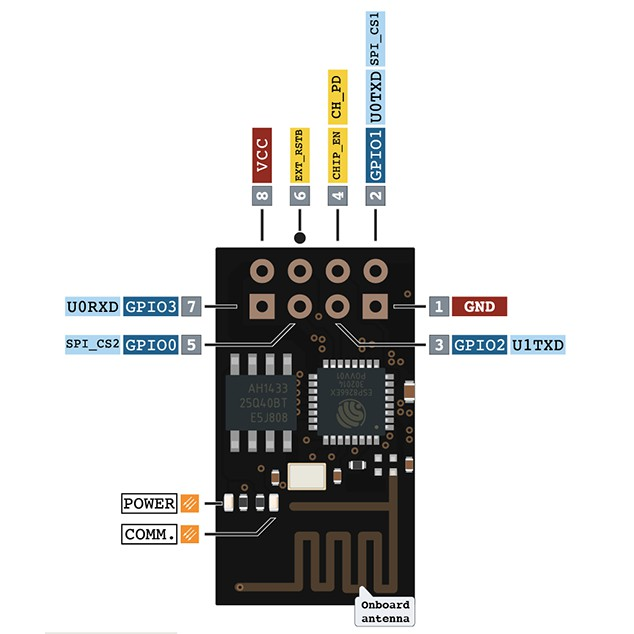
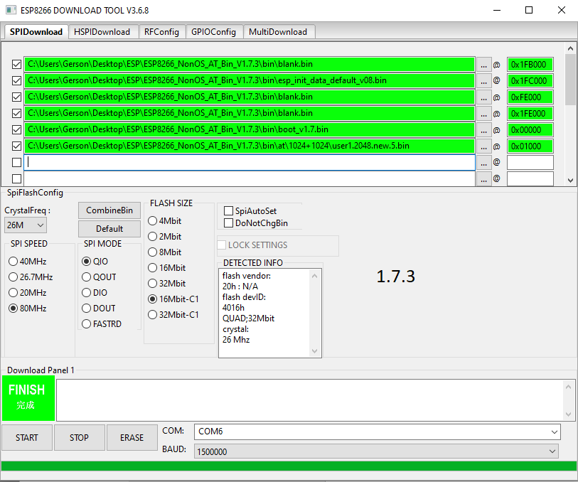

ESP-8266 Modules¶
Overview¶
ESP-8266 radio is a cost-effective Wi-Fi SOC module which allows any microcontrollers to easily access to WiFi network. This module supports the standard IEEE802.11 b/g/n protocol, built-in complete TCP/IP protocol stack. Users can use this series of modules to add networking capabilities to existing devices.
The simplest module that uses ESP-8266 is ESP-01. This is a generic shield configuration that allows any ESP-8266 module variation including ESP-12E/F.
{kind=link}
Pins Assignment of the ESP-01 Module¶
Connector Pin |
Function |
|---|---|
GND |
POWER GND |
GPIO1 |
U0_TXD |
GPIO2 |
|
CHIP_EN |
ENABLE (VDD = RUN, GND = LOW POWER) |
GPIO0 |
|
EXT_RST |
|
GPIO3 |
U0_RXD |
VDD |
POWER +3.3V |
Requirements¶
This shield requires a board which provides a configuration that allows an UART interface. (see Shields for more details).
Note
Sometimes boards declare standard headers like Arduino R3 but not define all connections. Make sure that the board you are using have all definitions to avoid build errors.
The ESP-8266 should be loaded with the ESP8266 AT Bin 1 software which is available at Espressif Systems web site. The ESP-01 module have up to 1MB of flash and the last available stack that fits on this device is ESP8266 AT Bin V1.6.2. This version is command compatible with ESP8266 AT Bin 1.7.x which is the minimal version supported by the ESP WIFI driver.
The ESP-8266 Modules that have 2MB or more is highly recommended upgrade to version 1.7.x for better future compatibility.
This tutorial won’t explain how firmware must be upgraded. However, it will present some tips to easily success. The ESP WIFI was tested with an ESP-01 with 1MB flash using Boot Mode and with Flash size 8Mbit: 512KB + 512KB. The ESP8266 AT Bin 1.7.x available requires the following partition configuration to works:
{kind=link}
Tips
Don’t forget to erase Flash before upgrade
Upgrade all binaries at same time.
ESP-8266 bootloader won’t send garbage. Try connect at 74880 bps if you module have 26MHz crystal to detect boot fails.
Note
Boards that already have a network interface: Check network documentation to understand how properly configure both interfaces. To keep simple, make sure WiFi is the only interface enabled at Networking -> Link Layer Options. This will avoid problems running Zephyr samples.
Supported variations¶
The below table suggests shield variation accordingly with end user application. When a standard connector (arduino, mikrobus) is available on board, user should select the matching shield configuration. When esp_8266 shield is used with a board that doesn’t feature a standard connector, a dedicated <board>.overlay file should be provided. The remaining configurations should be used based on the board standard headers available.
Connector Standard |
Shield Designation |
Variation |
|---|---|---|
Without standard (overlay) |
1 |
|
Arduino |
2 |
|
MikroBus |
3 |
Build and Programming¶
Set -DSHIELD=<shield designation> when you invoke west build.
To build shield with specific overlay:
# From the root of the zephyr repository
west build -b sam4e_xpro samples/net/wifi -- -DSHIELD=esp_8266
west flash
To build shield with standard headers:
# From the root of the zephyr repository
west build -b [disco_l475_iot1 | frdm_k64f | lpcxpresso55s69_ns | nucleo_f767zi] samples/net/wifi -- -DSHIELD=[esp_8266_arduino | esp_8266_mikrobus]
west flash